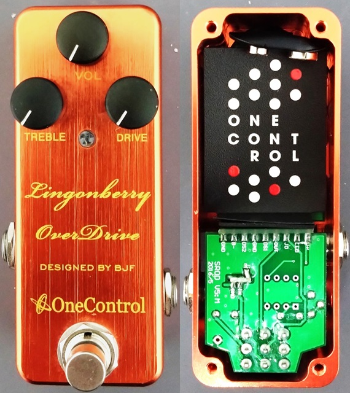
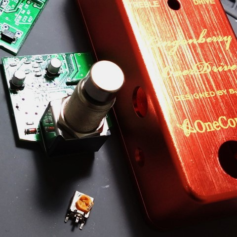
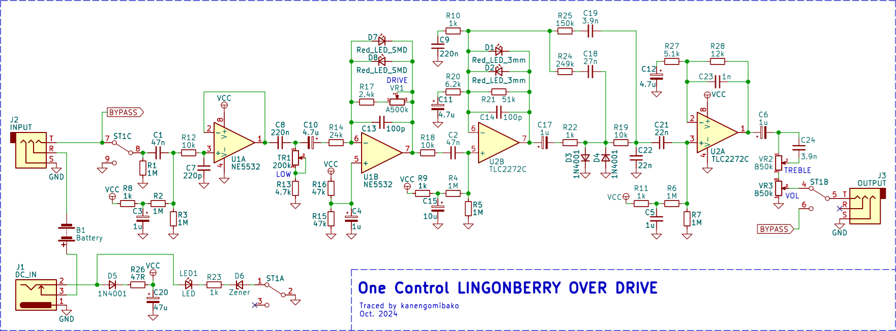
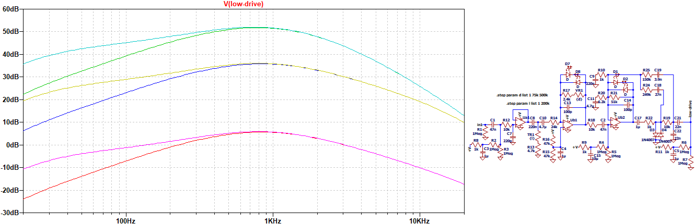
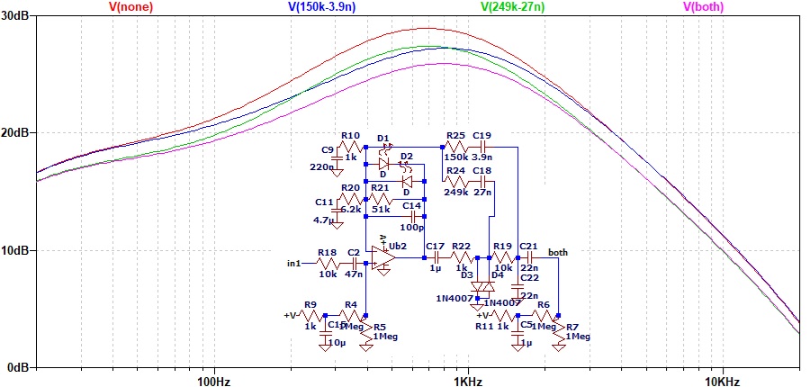
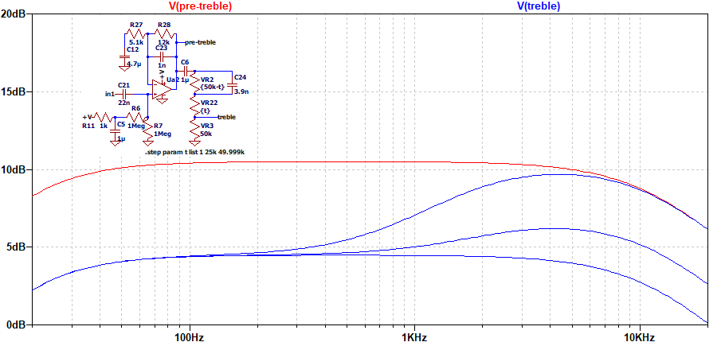

One Control LINGONBERRY OVER DRIVE 修理・解析
2024年11月08日 カテゴリー：修理・改造・解析

ジャンク品として手に入れたOne Control LINGONBERRY OVER DRIVEを修理、解析しました。KiCadデータ（基板画像入り）とLTspiceの回路図データはGitHubにあります。
【修理】

トリマーがボロボロでうまく回せない状態でしたが、その他は問題ないようでした。交換用に秋月電子にある横向きの半固定抵抗を購入したものの、ピンの配置が違っていたので、なんとか足を曲げて取り付けました。こういった見えにくい位置にあるトリマーは、どうしても回し過ぎてネジ部分がダメになりやすいです。また、寿命が200回程度と短いのにも注意が必要だと思います。
▽回路図

公式サイトによると、Lingonberry Over DriveはStrawberry Red Over Driveの歪みをより強くしたものだそうです。Strawberry Red Over Driveは下記ページで解析されています。
・kc_soldermanのblog - Strawberry Red Over Drive を解析してみた
バイアス電圧を何度も生成していることや、3段目のオペアンプの負帰還が複雑になっていることについて記載があります。Lingonberry Over Driveも同じ回路で、よりハイゲインになるよう定数を変えてあります。
▽シミュレーション
- DRIVE（0%→50%→100%） LOW（0%→100%）

回路は複雑に見えますが、周波数特性は特殊な形ではありません。LOWコントロールは、歪む前のハイパスフィルターのカットオフ周波数が調整されます。
R24とC18、R25とC19の経路がある場合の変化を確認しました。

負帰還なので、ありの場合にゲインが下がることになります。アンプのような音を目指した設計なのかもしれませんが、はっきりとした意図は不明です。Honey Bee OD、Blueberry Bass Overdrive等でも同様の回路が採用されています。
- TREBLE 0%→50%→100%

ギター本体やアンプのボリュームに取り付けるハイパスコンデンサのように、高音域成分を残して音量を下げるという動きを利用したトーンコントロールです。